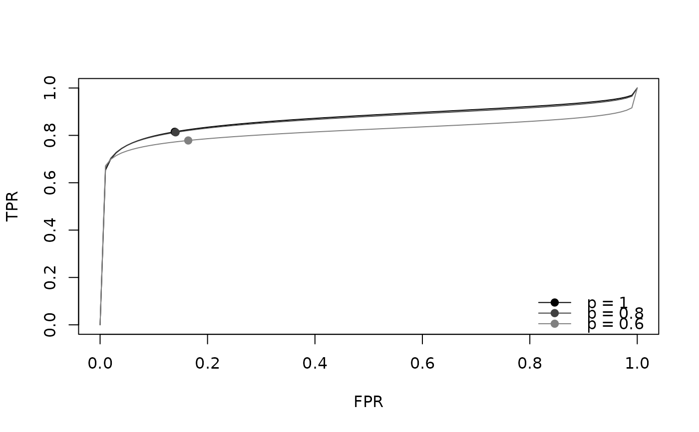

Sensitivity analysis for publication bias on the SROC curve
srocsa.t.RdThis function conducts the likelihood-based sensitivity analysis for publication bias
on the summary receiver operating characteristic (SROC) curve and the area under the SROC curve (SAUC)
in meta-analysis of diagnostic test accuracy (Zhou et al., 2023).
The bivariate random-effects model of the logit-transformed sensitivity and specificity is combined with
a selection function on the \(t\)-statistic of the linear combination of them
with the contrast vector \((c_1, c_2)\).
The model is fitted for each marginal selection probability \(p\) in sa.p.
Arguments
- TP
Specify the column of true positives (TP).
- FN
Specify the column of false negatives (FN).
- TN
Specify the column of true negatives (TN).
- FP
Specify the column of false positives (FP).
- data
A data frame containing the columns of
TP,FN,TN, andFP. One row corresponds to one study. It is required.- cc.value
Value added to the cells for the “continuity correction”, within (0, 1]. The default is 0.5.
- cc.type
Type of the “continuity correction” (
c("single", "all")). The default is"single"."single":cc.valueis added to all the cells of the studies with at least one zero cell."all":cc.valueis added to all the cells of all the studies if at least one study has a zero cell.- sa.p
A numeric vector of the marginal selection probabilities \(p = P(\mathrm{select})\), within (0, 1]. The model is fitted for each value. \(p = 1\) indicates no publication bias, and \(\beta\) and \(\alpha\) are not estimated. The default is 0.9.
- c11
Pre-specified value of \(c_1^2\) within [0, 1] (\(c_2^2 = 1 - c_1^2\)). If
c11 = NULL(default), \(c_1^2\) is estimated together with the other parameters.- ci.level
The confidence level of the confidence intervals, within (0, 1). The default is 0.95.
- parallel.ncores
The number of cores used for the parallel computation over
sa.p(PSOCK cluster of the package parallel). The default is1L(no parallel computation).- parset
A list of the settings for the estimation, which updates the default settings. Bad bounds may cause non-convergence.
mu.bound: \(\mu_1\) and \(\mu_2\) are searched within[-mu.bound, mu.bound]. The default is 5.tau.bound: \(\tau_1\) and \(\tau_2\) are searched within[eps, tau.bound]. The default is 5.beta.interval: The lower and upper bounds of \(\beta\). The default isc(0, 5).alpha.bound: The root of \(\alpha\) is searched starting from the interval[-alpha.bound, alpha.bound], which is extended if necessary (seeuniroot). The default is 5.eps: The lower bound of \(\tau_1\) and \(\tau_2\). The default is1e-5.
The element
inital.valuesis not used in this function.
Value
An object of class "srocsa":
a list with one element for each value of sa.p and the element call.
Each element is the output of nlminb
(par is (mu1, mu2, tau1, tau2, rho, beta), followed by c11 when c11 = NULL)
with the following additional elements, or NULL if the estimation failed.
var.mlThe inverse of the numerical Hessian matrix of the negative log-likelihood. When \(p = 1\), only for
(mu1, mu2, tau1, tau2, rho).sauc.ciSAUC and its confidence interval.
beta,alphaThe estimates of \(\beta\) and \(\alpha\) (
NAwhen \(p = 1\)).mu1.ci,mu2.ciThe estimates and confidence intervals of \(\mu_1\) and \(\mu_2\), and of the sensitivity and specificity.
par.allAll the estimates:
mu1,mu2,tau1^2,tau2^2,tau12,c1^2,c2^2,beta,alpha,sauc,sens,spec.
The attribute "data" is a data frame of the study-level logit-transformed sensitivity (y1)
and specificity (y2) and their variances (v1, v2),
used by plot.srocsa (add.study = TRUE).
The results can be shown by print.srocsa, summary.srocsa, and plot.srocsa.
Details
- Bivariate model
Let \(y_{1i}\) and \(y_{2i}\) be the logit-transformed sensitivity and specificity of study \(i\), and \(v_{1i}\) and \(v_{2i}\) be their variances. \((y_{1i}, y_{2i})\) follows the bivariate normal distribution with mean \((\mu_1, \mu_2)\) and variance-covariance matrix \(\mathrm{diag}(v_{1i}, v_{2i}) + \Omega\), where \(\Omega\) has the between-study standard deviations \(\tau_1, \tau_2\) and correlation \(\rho\).
- Selection function
The probability of publishing study \(i\) is modeled as \(\Phi(\alpha + \beta t_i)\), where \(t_i = (c_1 y_{1i} + c_2 y_{2i}) / \sqrt{c_1^2 v_{1i} + c_2^2 v_{2i}}\), \(c_1, c_2 \ge 0\), and \(c_1^2 + c_2^2 = 1\). For given \(p\) and the other parameters, \(\alpha\) is determined such that the mean of the inverse of the marginal selection probabilities of the observed studies equals \(1/p\).
- SAUC
See
sauc.- Initial values
The initial values of \((\mu_1, \mu_2, \tau_1, \tau_2, \rho)\) are the estimates of the bivariate model without selection by
mixmeta. The initial values of \(\beta\) and \(c_1^2\) are 0.1.- Continuity correction
References
Zhou Y, Huang A, Hattori S (2023). A likelihood-based sensitivity analysis for publication bias on the summary receiver operating characteristic in meta-analysis of diagnostic test accuracy. Statistics in Medicine, 42(6), 781–798. doi:10.1002/sim.9643
Examples
## load data
data(IVD)
## estimate c1^2
fit1 <- srocsa.t(TP = TP, FN = FN, TN = TN, FP = FP, data = IVD, sa.p = c(1, 0.8, 0.6))
fit1
#> ==================================================
#> Model optimization
#>
#> Number of studies : 33
#> Optimizer : 1 1 1
#>
#> * 1 indicates converged
#> ==================================================
#>
#> SAUC Estimates
#> -------------------------------------------
#> Marginal p SAUC SE CI.low CI.up
#> -------------------------------------------
#> p = 1 0.874 0.029 0.806 0.920
#> p = 0.8 0.871 0.030 0.800 0.919
#> p = 0.6 0.822 0.041 0.727 0.889
#>
#> ==================================================
#>
#> Parameter Estimates (SE)
#> -------------------------------------------------------------------------------------------------------------------------
#> Marginal p mu_se mu_sp tau_se tau_sp rho beta alpha
#> -------------------------------------------------------------------------------------------------------------------------
#> p = 1 1.484 (0.177) 1.824 (0.154) 0.597 (0.175) 0.826 (0.117) -0.424 (0.236) - -
#> p = 0.8 1.472 (0.177) 1.818 (0.154) 0.607 (0.179) 0.828 (0.118) -0.404 (0.241) 5.000 (5.396) -7.943 (-)
#> p = 0.6 1.234 (0.150) 1.681 (0.153) 0.618 (0.202) 0.850 (0.127) -0.275 (0.270) 5.000 (4.126) -10.451 (-)
#>
## fix c1^2 = 0.5
fit2 <- srocsa.t(TP = TP, FN = FN, TN = TN, FP = FP, data = IVD, sa.p = c(1, 0.8, 0.6), c11 = 0.5)
print(fit2)
#> ==================================================
#> Model optimization
#>
#> Number of studies : 33
#> Optimizer : 1 1 1
#>
#> * 1 indicates converged
#> ==================================================
#>
#> SAUC Estimates
#> -------------------------------------------
#> Marginal p SAUC SE CI.low CI.up
#> -------------------------------------------
#> p = 1 0.874 0.029 0.806 0.920
#> p = 0.8 0.869 0.030 0.798 0.918
#> p = 0.6 0.820 0.009 0.803 0.837
#>
#> ==================================================
#>
#> Parameter Estimates (SE)
#> -------------------------------------------------------------------------------------------------------------------------
#> Marginal p mu_se mu_sp tau_se tau_sp rho beta alpha
#> -------------------------------------------------------------------------------------------------------------------------
#> p = 1 1.484 (0.177) 1.824 (0.154) 0.597 (0.175) 0.826 (0.117) -0.424 (0.236) - -
#> p = 0.8 1.469 (0.176) 1.811 (0.155) 0.603 (0.178) 0.832 (0.119) -0.400 (0.243) 5.000 (6.809) -9.473 (-)
#> p = 0.6 1.257 (0.076) 1.628 (0.083) 0.602 (0.191) 0.870 (0.127) -0.264 (0.234) 5.000 (NA) -11.487 (-)
#>
summary(fit2)
#> Input:
#> srocsa.t(TP = TP, FN = FN, TN = TN, FP = FP, data = IVD, sa.p = c(1,
#> 0.8, 0.6), c11 = 0.5)
#>
#> ==================================================
#> Model optimization
#>
#> Number of studies : 33
#> Optimizer : 1 1 1
#>
#> * 1 indicates converged
#> ==================================================
#>
#> SAUC Estimates
#> -------------------------------------------
#> Marginal p SAUC SE CI.low CI.up
#> -------------------------------------------
#> p = 1 0.874 0.029 0.806 0.920
#> p = 0.8 0.869 0.030 0.798 0.918
#> p = 0.6 0.820 0.009 0.803 0.837
#>
#> ==================================================
#>
#> Parameter Estimates (SE)
#> -------------------------------------------------------------------------------------------------------------------------
#> Marginal p mu_se mu_sp tau_se tau_sp rho beta alpha
#> -------------------------------------------------------------------------------------------------------------------------
#> p = 1 1.484 (0.177) 1.824 (0.154) 0.597 (0.175) 0.826 (0.117) -0.424 (0.236) - -
#> p = 0.8 1.469 (0.176) 1.811 (0.155) 0.603 (0.178) 0.832 (0.119) -0.400 (0.243) 5.000 (6.809) -9.473 (-)
#> p = 0.6 1.257 (0.076) 1.628 (0.083) 0.602 (0.191) 0.870 (0.127) -0.264 (0.234) 5.000 (NA) -11.487 (-)
#>
#> ==================================================
#> All elements of the fitted models
#> ==================================================
#>
#> --------------------------------------------------
#> p = 1
#> --------------------------------------------------
#> mu1 mu2 tau1^2 tau2^2 tau12 c1^2 c2^2
#> 1.484 1.824 0.357 0.683 -0.209 0.500 0.500
#> beta alpha sauc sens spec
#> NA NA 0.874 0.815 0.861
#>
#> --------------------------------------------------
#> p = 0.8
#> --------------------------------------------------
#> mu1 mu2 tau1^2 tau2^2 tau12 c1^2 c2^2
#> 1.469 1.811 0.363 0.692 -0.201 0.500 0.500
#> beta alpha sauc sens spec
#> 5.000 -9.473 0.869 0.813 0.859
#>
#> --------------------------------------------------
#> p = 0.6
#> --------------------------------------------------
#> mu1 mu2 tau1^2 tau2^2 tau12 c1^2
#> 1.257 1.628 0.363 0.757 -0.138 0.500
#> c2^2 beta alpha sauc sens spec
#> 0.500 5.000 -11.487 0.820 0.778 0.836
#>
plot(fit2)

## continuity correction for all the studies
fit3 <- srocsa.t(TP = TP, FN = FN, TN = TN, FP = FP, data = IVD, sa.p = 0.8, cc.type = "all")
fit3
#> ==================================================
#> Model optimization
#>
#> Number of studies : 33
#> Optimizer : 1
#>
#> * 1 indicates converged
#> ==================================================
#>
#> SAUC Estimates
#> -------------------------------------------
#> Marginal p SAUC SE CI.low CI.up
#> -------------------------------------------
#> p = 0.8 0.855 0.031 0.782 0.907
#>
#> ==================================================
#>
#> Parameter Estimates (SE)
#> ------------------------------------------------------------------------------------------------------------------------
#> Marginal p mu_se mu_sp tau_se tau_sp rho beta alpha
#> ------------------------------------------------------------------------------------------------------------------------
#> p = 0.8 1.375 (0.161) 1.798 (0.153) 0.557 (0.167) 0.822 (0.117) -0.397 (0.246) 5.000 (5.891) -7.697 (-)
#>